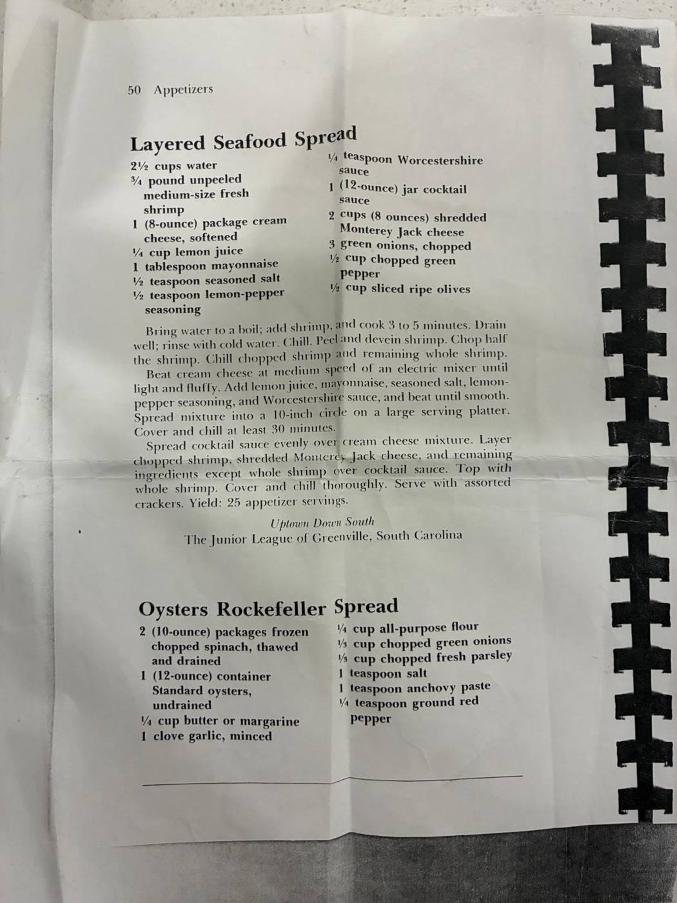

Appetizers
Layered Seafood Spread
From the kitchen of Mom
ChillAt least 30 min, then until cold
Serves25 appetizer servings

Mom's original card · tap to enlarge
Ingredients
Method tap a step to mark it done
- Bring the water to a boil, add the shrimp and cook 3–5 minutes.
- Drain, rinse with cold water and chill. Peel and devein. Chop half the shrimp and chill both the chopped and whole shrimp.
- Beat the cream cheese with an electric mixer on medium until light and fluffy. Add the lemon juice, mayonnaise, seasoned salt, lemon-pepper seasoning and Worcestershire, and beat until smooth.
- Spread into a 10-inch circle on a large serving platter. Cover and chill at least 30 minutes.
- Spread the cocktail sauce evenly over the cream cheese. Layer the chopped shrimp, Monterey Jack, green onions, green pepper and olives on top, then finish with the whole shrimp.
- Cover and chill thoroughly. Serve with assorted crackers.